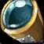
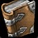
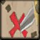
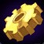
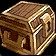
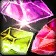
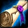
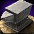
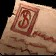

Retail, Classic and Forever, under Wine or Proton. Your addons from
CurseForge, WoWInterface and GitHub, found, installed and kept current in one
native window that wears your Omarchy theme.
Tip:omaforge backs up your WTF folder before every bulk update.
The Cinematic
Thirty seconds, no Wine prefix spelunking.
Quest Log
Everything omaforge does for you, one quest at a time.
Quest Log0/9 accepted
Every Client, Found for You
Your World of Warcraft installs are scattered across the land: in Lutris, in
Steam's Proton prefixes, in Bottles and Heroic, in a lonely ~/.wine.
omaforge seeks them all out, and every client folder it finds becomes its own
entry: Retail, PTR, xPTR, beta, Classic Era, progression Classic, anniversary
realms and World of Warcraft: Forever.
Objectives
Scan Lutris, Steam/Proton, Bottles, Heroic and ~/.wine
List each client folder on its own
Add any other folder by hand
Rewards

Spyglass of the Far Prefix
Spyglass of the Far PrefixBinds when installedUse: Scans every Wine prefix for World of Warcraft."It even found the one in ~/Games you forgot about."
Know What You Already Have
Some addons you dragged in by hand, others came from another manager. omaforge
recognizes them all without reinstalling a thing, and anything it can't place is
listed as unknown, never hidden.
Objectives
Match folders to their exact CurseForge file by fingerprint
Show DBM, BigWigs, ElvUI and WeakAuras as one entry each
Uninstall every folder of an addon at once
Rewards

Ledger of Fingerprints
Ledger of FingerprintsUniqueUse: Names the exact file an addon folder came from."Every folder has a story."
Finds the Good Stuff
Explore ranks the top addons for the game you have selected, with icons, download
counts and categories. Each game version gets its own list, so Forever shows Forever
addons. Neither site publishes star ratings, so omaforge shows the closest signals
they do.
Objectives
Rank CurseForge by popularity, total downloads or recent updates
Filter CurseForge by category
Rank WoWInterface by downloads this month, favorites or recent updates
Rewards

Map of Popular Addons
Map of Popular AddonsBinds when installedUse: Reveals the most popular addons for your game version.
Seek Across Three Realms
Search CurseForge, WoWInterface and GitHub at once, then sort by downloads,
popularity, favorites, recent updates or name. Paste a GitHub URL to install
straight from a repository's releases.
Objectives
Search every source at once with Ctrl+K
Sort the results by what matters to you
Install from a GitHub URL
Rewards
Far-Seeing Gizmo
Far-Seeing GizmoRequires Engineering (1)Use: Searches three addon sites at once."Gnomish engineering. It only exploded twice."
See Before You Install
Click any addon to open its details: the full description, screenshots and links
from its source. Click a screenshot to see it full size and browse with the arrow
keys. Esc, or a click outside, sends it away.
Objectives
Read an addon's description before you install it
Browse its screenshots full size
Open its website, source, issues or wiki
Rewards
Scroll of True Seeing
Scroll of True SeeingNew in 0.2.4Use: Reveals an addon's description, screenshots and links.
Updates Without Surprises
Each download is unpacked next to AddOns, then swapped in with atomic
renames. If anything fails, the previous version is put back. When an author turns
off downloads in other apps on CurseForge, omaforge looks for the same addon on
GitHub or WoWInterface instead.
Objectives
Update everything with Ctrl+U
Pin an addon to keep its version, or ignore it
Follow its stable, beta or alpha channel
Rewards

Gnomish Update Gear
Gnomish Update GearBinds when installedUse: Replaces an addon with its new version, or not at all.
Guard the WTF
Your WTF folder holds SavedVariables, keybindings and client settings:
years of UI tuning. omaforge backs it up before every bulk update, and any backup
can be restored from the Backups tab. Restoring saves your current WTF first.
Objectives
Back up WTF before every bulk update
Restore any backup from the Backups tab
Rewards

Strongbox of Saved Variables
Strongbox of Saved VariablesUniqueUse: Keeps a copy of WTF, just in case."Your raid frames, exactly where you left them."
Wear Your Colors
omaforge uses the active Omarchy theme's colors and font, and re-themes live when
you run omarchy theme set. On other desktops it wears its own dark
theme.
Objectives
Change your Omarchy theme
Watch omaforge change with it
Rewards

Prismatic Theme Gem
Prismatic Theme GemSocket: Any colorUse: Matches your Omarchy theme, live.
The Scroll of Commands
Everything the app does is also a command, and every command takes
--json for scripts. Turn on the daily timer and your addons update
themselves, with a desktop notification when they do.
Objectives
Update every client from a terminal
Turn on the daily update timer
Carry an addon list to another machine
# update every client; WTF is backed up first
omaforge update --all --notify
# the same, every day
systemctl --user enable --now omaforge-update.timer
# take your addons with you
omaforge export retail.json
omaforge import retail.json -c forever
Rewards

Scroll of Automation
Scroll of AutomationBinds to accountUse: Updates your addons while you sleep.
Claim Your Loot
Every package is on GitHub Releases. Pick the one for your realm.
Lootomaforge v0.2.4

Omarchy & ArchLegendary · adds “WoW Addons” to the Omarchy menu
Release packages include omaforge's CurseForge key. WoWInterface and GitHub need no key at all.
The Tavern
Questions, answered by the innkeeper.

Innkeeper Forgewell
Well met, traveler! Pull up a stool by the fire. What would you like to know?
Does it find my Wine or Proton install?
It looks in Lutris (including the Flatpak), Steam and Proton, Bottles, Heroic and
~/.wine for a World of Warcraft folder, and lists every
client inside it. If yours lives somewhere else, add the folder under Settings.
Will it mess up my UI settings?
No. It never touches WTF except to back it up before a bulk update,
and to restore a backup when you ask. Updates are swapped in atomically, and a
failed update puts the previous version back.
Do I need a CurseForge API key?
Not with the release packages: they include omaforge's key. A pipx install or a
build from source needs your own, entered under Settings. WoWInterface and GitHub
work without any key.
Why won't some CurseForge addons download?
About half of the most popular CurseForge addons have downloads in other apps
turned off by their authors. omaforge then looks for the same addon on GitHub or
WoWInterface and installs from there. If there's none, Page opens it on
curseforge.com.
Does it support World of Warcraft: Forever?
Yes. Forever gets its own entry, its own Explore lists and the right builds from
CurseForge and GitHub. WoWInterface can't tell Forever and Classic Era apart, so its
Forever lists include Classic Era addons.
Do I need Omarchy?
No. It's made for Omarchy, but runs on any Linux desktop: there are packages for
Arch, Debian, Ubuntu and Fedora, and pipx covers the rest. Outside Omarchy it uses
its own dark theme.
Is this made by Blizzard?
No. omaforge is an unofficial, free and open source fan project by
Nine Point Labs. It isn't affiliated
with or endorsed by Blizzard Entertainment.